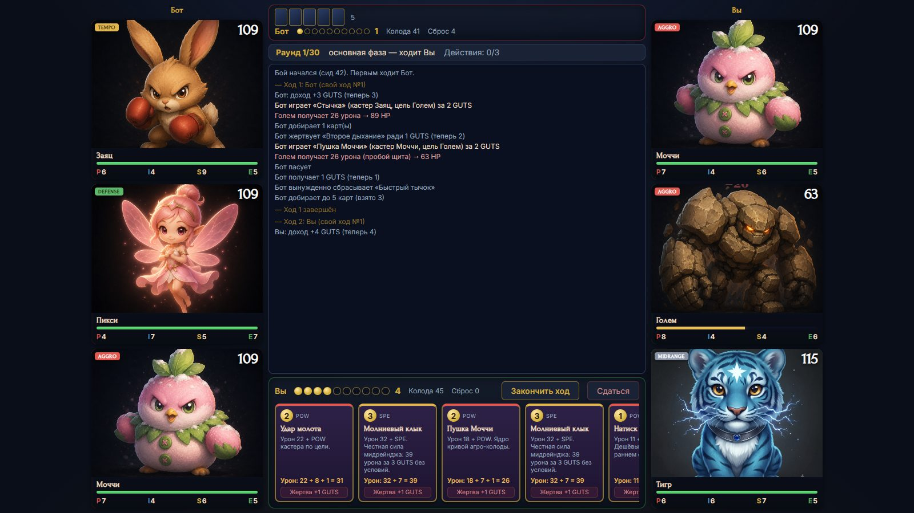
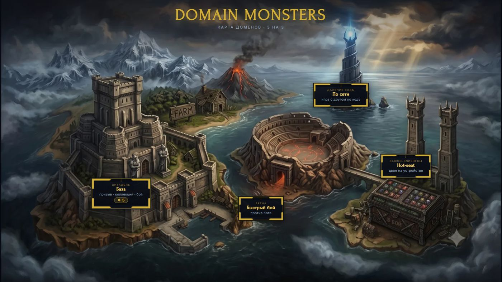
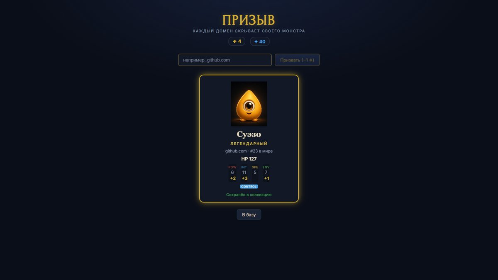
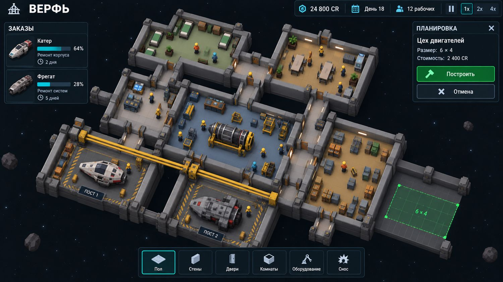
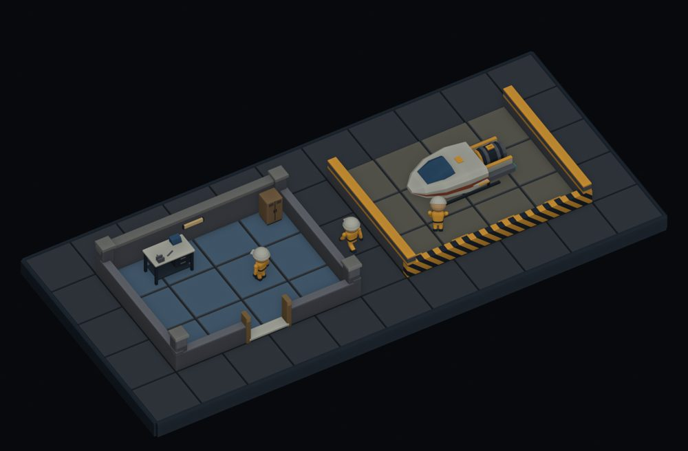
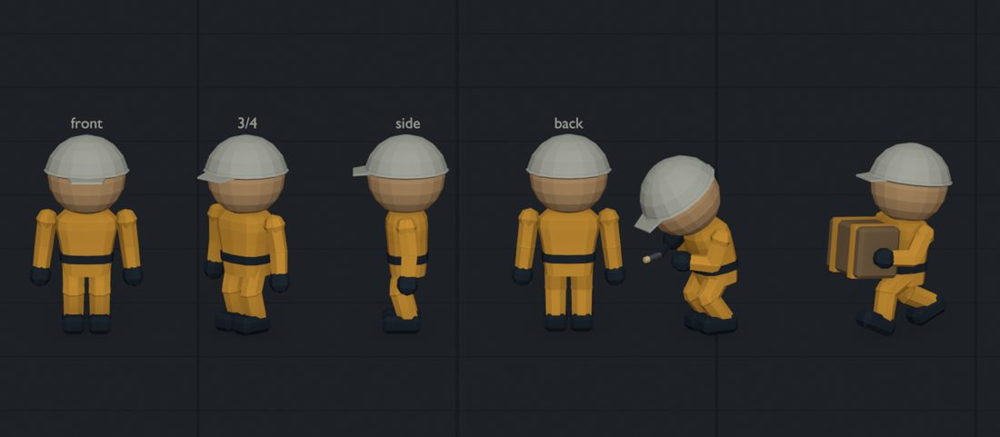
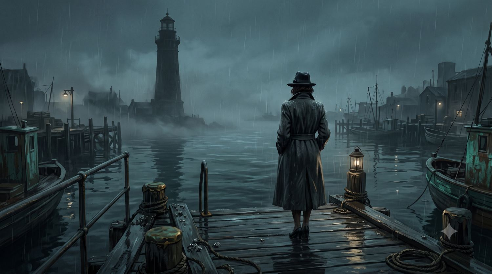
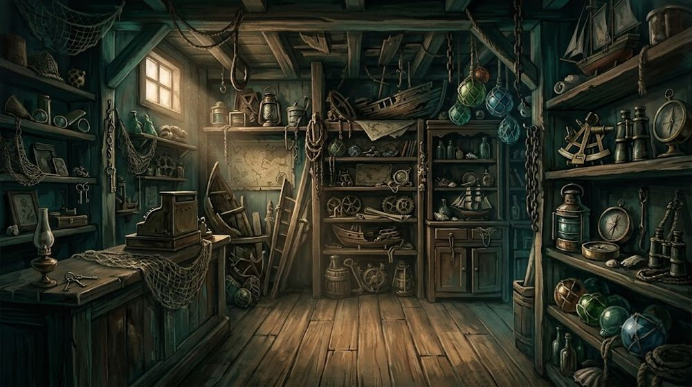
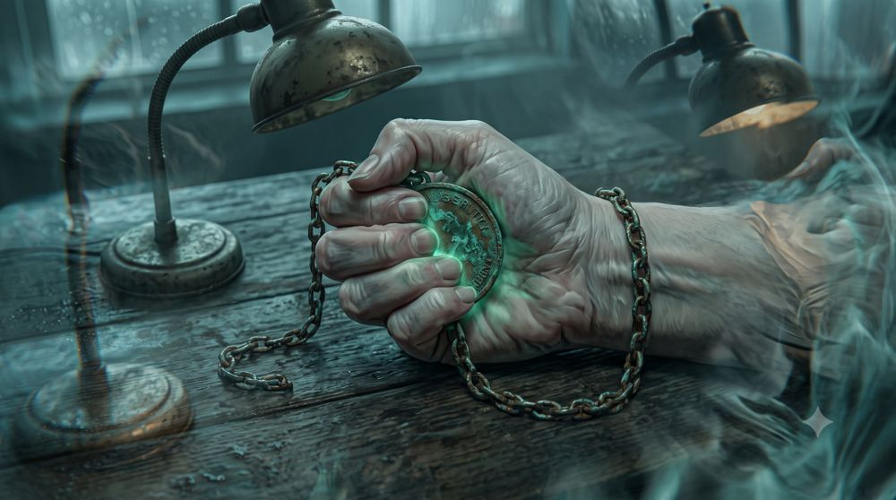

Пишу спецификации, по которым команда собирает фичу, и проверяю дизайн-решения прототипом, симуляцией и плейтестом, прежде чем в них вкладываться.
Прототипы сделаны в команде из двух человек. Концепции, GDD, спецификации и решения по балансу — мои.
Пошаговые бои командами из трёх монстров. Монстров призывают по домену сайта: github.com всегда даёт одного и того же монстра, а редкость зависит от популярности сайта.



github.com → легендарный Суэзо, 23-й сайт в мире.Кастер — Голем (AGGRO, в агро-окне), POW 5. Карта POW, база 6. Цель — DEFENSE, щит 3, HP 20.
| Шаг | Расчёт | урон |
|---|---|---|
| 1 | база + стат кастера: 6 + 5 | 11 |
| 2 | бонус AGGRO: +2 | 13 |
| 3 | AGGRO пробивает половину: 6 мимо щита, щит 3 гасит 3 | 10 |
| 4 | DEFENSE режет четверть: floor(10 × 0,75) | 7 |
| 5 | HP цели: 20 − 7 | 13 |
Одновременный KO. Одна карта с цепной атакой добила последних монстров обеих сторон — побеждает активный игрок, даже если по тексту карты его монстр умер «первым».
Щит поверх щита. Меньший щит поверх большего не ухудшает и не суммируется: shield = max(5, 3) = 5.
Победа даёт +2 Сигила, поражение — 0: поражение не даёт Сигилов — иначе дефицит мёртв
. Эссенция капает и за поражение (+10), чтобы проигрывающий новичок всё равно двигал тренировку.
Симуляция greedy-бот против greedy-бота: 1000 партий на каждую из 15 пар команд, сиды 7, 42 и 99. Полыми маркерами — первое включение «часов колоды», до правок.
| Команда | сид 7 | сид 42 | сид 99 | до правок |
|---|
Космическая верфь: принимаешь корабли на ремонт, решаешь, чинить узел в цеху или купить готовый, нанимаешь специалистов и достраиваешь станцию, не уходя в банкротство.



| GDD | концепция, экономика, кран, корпус, персонал, рост, мир, отброшенные идеи |
| Тех-спек v1 | модель состояния, команды, константы, формулы, порядок тика |
| Патч 00 | строительство станции, расширение, снос, жильё |
| Патч 01 | пересмотр модели производства, варианты A / B / C |
Старый спек исключает растущий корпус из v1 — патч 00 включает расширение секциями. Исходный GDD объяснял производство возрастающей отдачей — патч 01 исправляет это на постоянную отдачу при неограниченном спросе.
20 сидов × 90 игровых дней на каждую стратегию автоигрока. Изменения: корабль приходит того класса, который станция способна обслужить; перенастроены награда за катер и цены замен.
| Стартовая стратегия | банкротств из 20 | сдано кораблей | простой причалов |
|---|---|---|---|
| ремонт без испытаний | 5 → 0 | 17,8 → 89,5 | 90,2% → 54,4% |
| испытание каждого корабля | 8 → 0 | 16,3 → 85,7 | 83,5% → 36,4% |
| покупка замен | 12 → 0 | 16,4 → 89,5 | 96,2% → 83,4% |
Проверка роста на 180 дней: 10 из 10 прогонов без банкротств прошли путь через реальные стройки до фрегатов и сухогрузов, первый фрегат — около 137-го дня. Открытый вопрос для следующей итерации: испытательный стенд всё ещё невыгоден как первая постройка.
Детектив Майя касается потерянного предмета и видит его прошлое. Каждый эпизод — отдельное дело, в котором игрок решает, вернуть ли предмет владельцу и восстановить ли правду.



| Исход | Условие |
|---|---|
| идеальный | вернуть компас и очистить имя Лючии, не продав компас коллекционеру |
| с ценой | вернуть компас или очистить имя |
| провал | всё остальное |
Продажа коллекционеру ломает идеальный финал: в лучшем случае — «цена».
Сравнение по тому, что важно автору эпизодов: как пишется логика, ловит ли инструмент ошибки до запуска и как быстро проверить сцену.
| Движок | Логика и состояние | Проверка до запуска | Плейтест |
|---|---|---|---|
| Вердигри | условия и эффекты в данных | богатый линтер | симуляция на движке, headless |
| AGS | C-подобный скрипт | нет, есть отладчик | запуск, брейкпойнты |
| Visionaire | визуальные действия + Lua | нет | запуск, консоль |
| Adventure Creator | ActionList: Check → Set | нет | Unity Play + наблюдатель |
| PowerQuest | C#-скрипт | компилятор | hot-reload |
| Escoria | DSL событий и команд | нет | запуск в редакторе |
| Ink | переменные, списки, счётчики посещений | проверки при компиляции | Inky, hot-reload |
| Ren'Py | Python-DSL | встроенный lint | hot-reload, автотесты |
Вывод разбора: главное отличие Вердигри — дедукция как встроенная механика и статическая проверка дела на тупики. Слабые места, зафиксированные в разборе: нет A*-навигации и сборки под платформы. Отдельно провёл UX-аудит редактора с приоритетами P0–P2.
Не накапливать вложения поверх непроверенного фана. Плейтест — самая дешёвая страховка от постройки небоскрёба на песке.из протокола плейтеста Domain Monsters